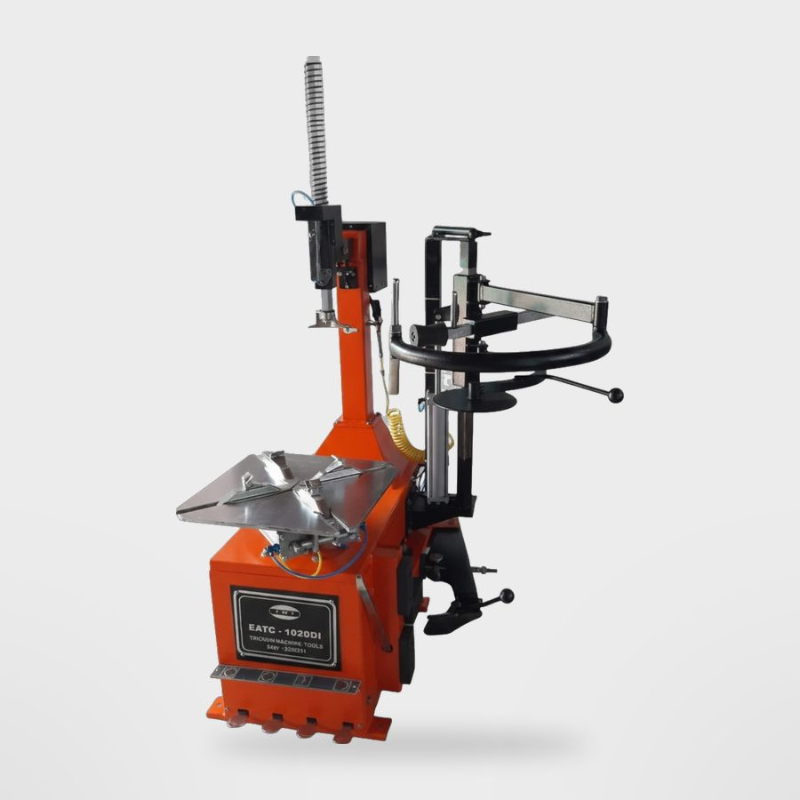

Automatic Tyre Changers
We design and manufacture tyre changers and tyre service equipment for cars, two-wheelers, lorries and trucks at our facility in the Government Industrial Estate, Ollur, Thrissur. Every machine is built with quality components for dependable, everyday use in tyre shops and service centres.

Our machines
Everything a tyre shop needs, from the tyre changer to the compressor that runs it.
Tyre changers
Tap Call or WhatsApp on any machine to ask for the price and delivery.
Better parts inside
A tyre changer is only as good as its cylinder, seals and valves. These are the parts we use in TMT tyre changers, and why.
- Cylinder
- Aluminium alloyDoes not rust, unlike mild steel cylinders
- Seal
- TDU sealBetter sealing, less leakage under heavy use
- Motor
- Crompton GreavesA trusted Indian motor brand built for long life
- Gears
- PB materialLasts longer than brittle cast iron gears
- Valves
- High-quality valvesLong life, and they can be repaired
- Air bearing
- MetalLasts longer than plastic, and can be repaired
- Pedals
- 4 pedal controlFiner control for the operator, easy to repair